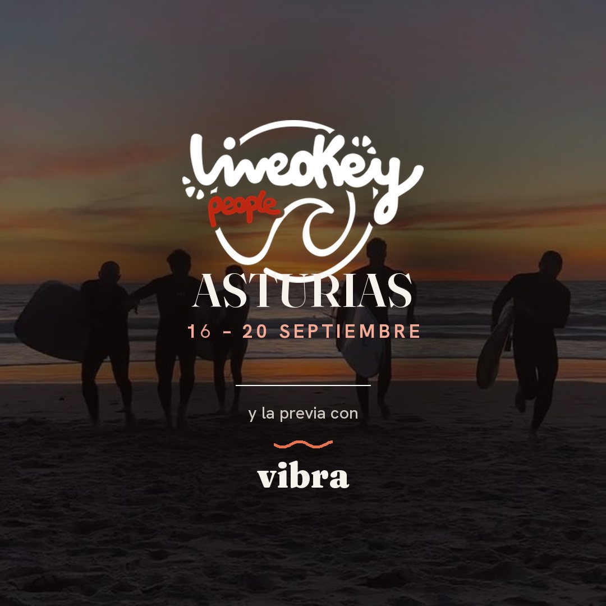

El jardín de la casa · aquí se desayuna y aquí empieza cada mañana
Miércoles, jueves y viernes. Cowork con foco, cocina en comuna, talleres y mar.


Se llega poco a poco. Deshacer la maleta, y al caer el sol, playa.
Desde las seis de la tarde. Se llega cada uno a su hora, sin prisa: no hay nada programado hasta el atardecer.
Dónde RuralSurf · Naveces, Castrillónver en el mapa ↗Quedamos allí para ver la puesta de sol y tomar algo en La Luna, el bar surfero de la playa. Vamos igual, seamos los que seamos. Y allí cenamos: hay burgers, pizzas y de todo para picotear.

Día entero: cowork por la mañana, cocina social al mediodía y tarde de disfrute, juernessss
Lo primero que hace el grupo junto, antes de desayunar. Opcional, pero engancha.

Se desayuna fuera, en el jardín de la casa. No está incluido: comprad antes de venir, o a cien metros hay una cafetería, típico bar de pueblo, que se llama Casa Demetrio.
Silencio productivo, a lo que hemos venido. Quien no tenga que trabajar: surf opcional o mañana libre.
Un rato de pie y en corro para contar en qué anda cada uno ahora mismo. No es presentarse: es enterarse de lo que hacen los demás y llevarse algo.
Nos organizamos con los coches, vamos a comprar y cocinamos todos juntos. De aquí sale la comida y la cena del día, y el gasto se reparte entre todos. Se come en grupo y sin prisa: es parte del plan, no un trámite. Y aquí empieza el juernes.
Cada uno trae un reto de los suyos y sale con él resuelto.
Experto en crecimiento de comunidades con propósito. Conócele aquí:
@abraham.vibraQuien tenga que currar, cowork. El resto: surf opcional, taller de surf skate o la tarde para ti.
Ruta andando hasta la playa para ver la puesta de sol desde allí. Lleva zapatillas que te valgan para andar por el monte.

La cena sale de la compra del grupo, como la comida. Y después, un juego que no se cuenta antes.
La misma mañana que el jueves, y comida fuera. Con esto se despide la previa: por la tarde empieza el finde.
Otra vez fuera, como ayer.
Igual que el jueves: quien no tenga que trabajar, surf opcional o mañana libre. O hablar con Abraham, que tiene preparados unos talleres adicionales que harán match con tu forma de vivir.
Hoy el parón no es contar en qué andas: es la dinámica de propósito, Oso, Tigre y Dragón. Empieza con una lectura corta que puedes leer desde ya, y sigue con tus tres números.
Abrir el tallerSalimos a comer a un sitio de la zona. Confirmamos cuál unos días antes.

Bahínas o el Playón de Bayas · la playa la elige el mar cada día
Del viernes por la noche al domingo. Surf por niveles, espicha asturiana, fiesta de disfraces y gimnasia natural al levantarse.


Llega LiveOkey. El check-in es a partir de las ocho de la tarde, y de ahí ya no se para hasta el domingo.
Aquí arranca el finde. El check-in es directamente en la sidrería El Cruce, en Naveces, al lado de RuralSurf.
Dónde Sidrería El Cruce · Navecesver en el mapa ↗Agua por la mañana y por la tarde, espicha asturiana al caer el día y los LiveOkey Games para acabar.

El mejor entrenador que puedes tener en tu día a día. Conócele aquí:
Programa ViveOkeyIncluido.
Por niveles, con monitor. Ya sabes en qué grupo vas y, si no, míralo al final de este planning.
La playa se decide el mismo día —el mar, el viento y lo que digan los monitores.
A partir de las cinco. Tenemos el material disponible para quien quiera meterse.
Cena de pie, sidra y comida asturiana de la tierra. Es la cena que entra con LiveOkey.
A cada uno le ha tocado su temática por privado y es secreto: nadie sabe de qué va nadie hasta el sábado. Hay premio al mejor disfraz — y al peor.
Último baño, dinámica de despedida, comida tranquila y vuelta a casa.
Incluido.
La de despedida.
Lo último que hacemos todos juntos, justo antes de comer.
Desde Naveces a Madrid son unas cinco horas.
Del finde entran la cena del sábado y los desayunos del sábado y del domingo.
Traeros desayunos para la previa, o tenéis Casa Demetrio al lado.
La comida del jueves es en comuna: hacemos compra conjunta y hacemos taller de «cocina social», by Chef Abraham.
Que es, al final, lo que hace el viaje:
Tres casas, nueve habitaciones, todas llenas. Busca tu nombre y ya sabes dónde dejar la mochila al llegar.
Héctor · Jorge · Ovidi · Jesús
Guille · Carolina · Silvia
María Ríos · Belén
Marta · Adrián Maqueda
Patricia · Irene
Sergio · Abraham · Emilio (Emilich) · Adrián Byczek · Genoveva · Carla
Eva · Momo · María Orlandi · Tania
Sandra · Alba Tienda
Raquel · Lorena
Cuatro tandas con monitor, por el nivel que pusiste en el formulario. El intermedio se parte en dos porque no cabe en una sola tanda.
Genoveva · Eva · Momo · Carla · Lorena · Silvia · Alba Tienda · Carolina
Belén · Ovidi · Tania · Jorge · Sandra · Raquel · Guille
María Orlandi · Emilio · Héctor · Irene · Jesús
Adrián Maqueda · Adrián Byczek · María Ríos · Marta · Patricia
Sergio · Abraham
La casa está en Naveces, concejo de Castrillón. Desde Madrid son unas cinco horas en coche. Si vienes en tren o en avión a Avilés o Gijón, dínos la hora y lo cuadramos con los coches.
Haced una videollamada antes de que comience el viaje para preguntaros estas cuatro cosas y alguna más que queráis.
1. ¿Qué te ha traído a este viaje? Lo de verdad, no lo que se dice.
2. ¿Qué es lo que mejor se te da y nadie te lo pregunta nunca?
3. ¿Qué te da respeto de este finde?
4. Una cosa que te encantaría que te pasara aquí.
Antes del viaje, durante o después: si te surge una duda, si llegas a otra hora o si algo no te cuadra, escríbele a Abraham o a Sergio. Por el grupo o por privado, lo que te venga mejor. Y búscanos en cualquier momento del viaje.
Y para tener una conversación bonita, profunda y mística, también: lo agradecemos mucho y nos encanta.
Esta vida pide otra
